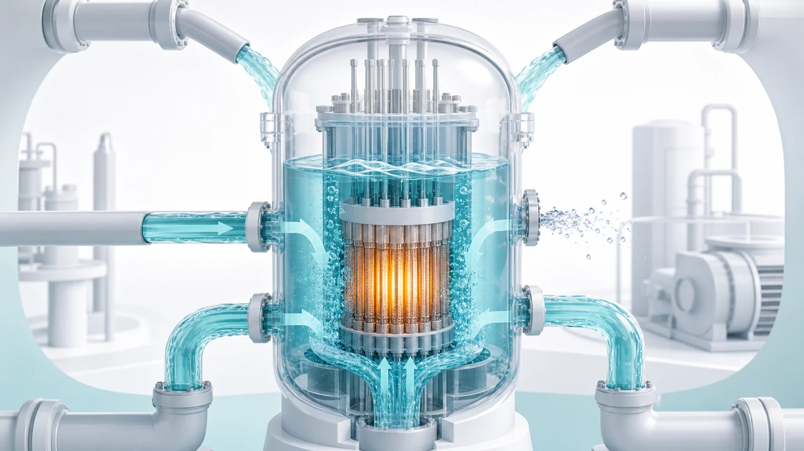
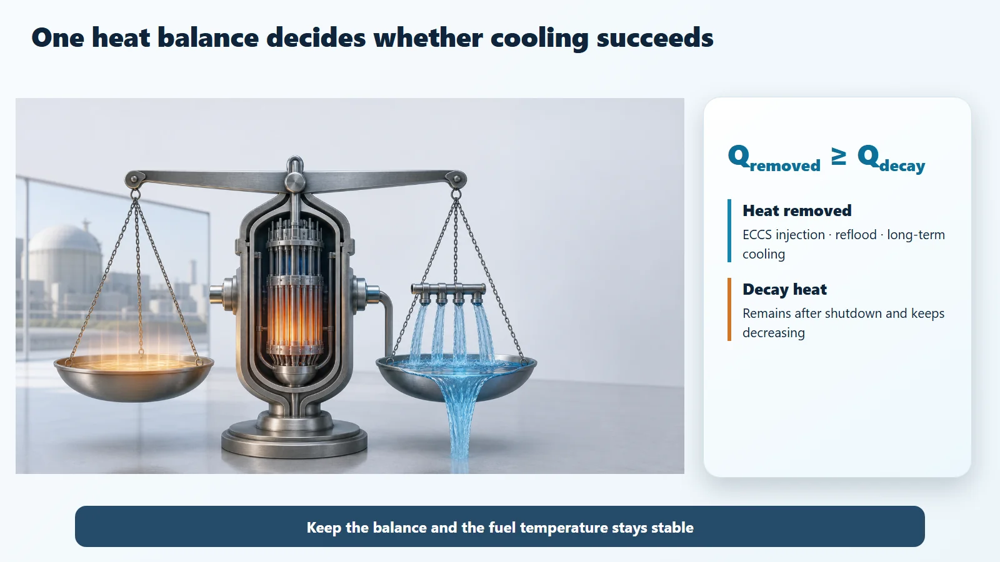
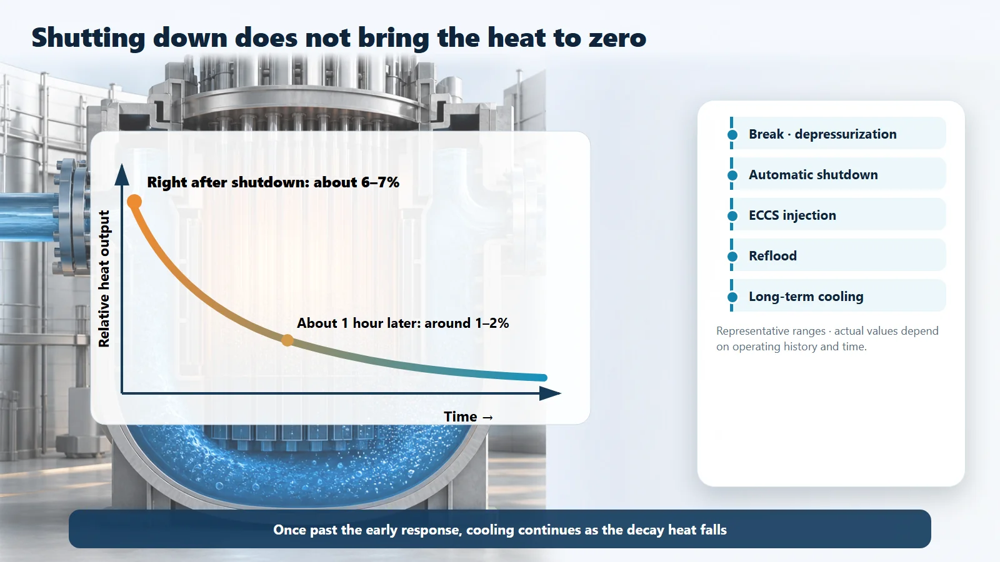

Safety Principles & Accident Analysis · 207
The Paychecks Stopped but the Autopay Didn't — The Basic Scenario of a Loss-of-Coolant Accident (LOCA)
Coolant leaks out, the reactor shuts down, yet decay heat keeps coming. Emergency cooling must keep heat removed at least equal to decay heat.

A loss-of-coolant accident (LOCA) is an accident in which the water that carries heat out of the reactor core escapes from the system. Shutting the reactor down stops fission almost at once, but decay heat, about 6–7% of the previous heat output right after shutdown, keeps coming. Safety depends on one inequality: the heat removed by emergency cooling must be at least equal to the decay heat.
Money stops coming in, but the autopay keeps going
Ever watched the card bill, the rent, the insurance and a pile of subscriptions all go out by autopay in the same week, just before payday? The balance drops in a flash. Worse, even if you freeze your card in a hurry, the payments already scheduled for that month still go out. The money coming in has stopped, but the money going out doesn't stop right away.
Nuclear power plants have an event with almost exactly the same structure. It is the loss-of-coolant accident, or LOCA. Look inside and it is the same story: an account that leaks while the spending carries on.
The plant's bank balance is its coolant
Inside a reactor, the nuclear fuel produces an enormous amount of heat. What carries that heat away is the coolant, usually water at high temperature and pressure. In bank terms, the coolant is the balance that every payment draws on.
A LOCA is an accident in which coolant escapes from the system through a pipe break or a leak, so the balance shrinks. One point matters here. A LOCA is not an accident in which the plant loses its heat-producing fuel; it loses the water that carries the heat.
The twist: shut the reactor down and the heat still doesn't switch off
"Then just shut the reactor down," you might say. That does happen: the control rods go in, the reactor shuts down automatically, and the fission chain reaction stops almost immediately. But this is where the real heart of the accident appears.
Shutting the reactor down does not switch the heat off right away. The radioactive materials that built up during fission keep decaying on their own, and they keep giving off heat. This is called decay heat. It works just like autopay. Freezing the card (stopping fission) blocks new spending, but the payments already scheduled (decay heat) keep going out for a while.
And it is not a small amount. Right after shutdown, decay heat is about 6–7% of the heat output the reactor was producing. It is like switching off the heating in a 100-story building and still getting six or seven floors' worth of heat. Of course this heat falls over time: after about an hour it drops to around 1–2%, and after about a day it is lower still. (These are representative values; the exact numbers depend on the reactor's operating history.) But because it only decreases and does not drop to zero right away, something must keep covering this spending while the balance leaks. That is the real reason LOCA matters.
So you need an emergency fund: the emergency core cooling system
The balance is leaking and the autopay keeps running. Left alone, the account would run dry. If the coolant runs out and the core is uncovered, the fuel temperature starts to rise. So nuclear plants are connected in advance to an emergency fund that tops up the balance automatically when it gets dangerous. This is the emergency core cooling system (ECCS), which pushes coolant into the core during an accident.
The interesting part is that this emergency fund is not a single account. There is injection at high pressure; pressurized water tanks that push themselves in once the pressure falls (a passive method that works without electricity); high-volume injection after the pressure has dropped; and long-term recirculation that collects the water that escaped and sends it round again. The core design idea is to keep several copies of the same function (redundancy), mix methods that work on different principles (diversity), and separate them so that if one fails another is still alive (independence).
All of this design comes down to a single inequality. If the heat the cooling systems remove is greater than or equal to the decay heat (heat removed ≥ decay heat), the fuel temperature stays stable; if it is smaller, the temperature rises. In bank terms, the balance holds as long as "money in ≥ money out." Nuclear safety analysis is, at bottom, calculating in advance whether this inequality still holds in the worst case.

Following the basic scenario in time order
Taking a sudden leak from a large pipe as the reference case, things go roughly like this. First, coolant rushes out through the break, system pressure plunges, and some of the water flashes to steam (depressurization). The drop in pressure and water level is detected and the reactor shuts down automatically. Decay heat still remains. On the signal, the ECCS injects coolant, and the uncovered core is covered with water again (reflood). Finally, water keeps circulating, providing long-term cooling until the remaining decay heat has died away.
Falling decay heat helps: the first minutes and hours are the most urgent, and the "spending" to cover shrinks with time. So the goal of the safety design is to keep the temperature of the fuel cladding below a set limit, even if coolant is lost. (Specific regulatory acceptance values, such as peak cladding temperature, are set by each country, regulator and reactor design; this post does not quote them.) If the cladding gets too hot it can react vigorously with water and steam and become weak, so the aim is to restore cooling before that happens and keep the fuel in shape.

| Stage | What happens |
|---|---|
| 1. Depressurization | Coolant escapes through the break; pressure plunges and some water flashes to steam |
| 2. Automatic shutdown | Low pressure and level are detected; fission stops, decay heat remains |
| 3. ECCS injection | Emergency cooling systems inject coolant into the core |
| 4. Reflood | The uncovered core is covered with water again |
| 5. Long-term cooling | Water keeps circulating until the remaining decay heat has died away |
Neighbors that are easy to confuse
First, a LOCA is not the same thing as a core meltdown. A LOCA is simply "an accident in which coolant is lost," and if cooling succeeds in time, the core is not damaged. A meltdown is a much later, much rarer outcome that happens only if cooling fails again and again.
Second, coolant "escaping" is different from coolant "not circulating." If the water is still inside the system but the pump flow drops so that it doesn't circulate well, that is a loss-of-flow accident. A LOCA is when the water itself leaves the system.
Third, the story changes with the size of the break. A large leak (large-break LOCA) drains the balance quickly and calls for a fast response; a small leak (small-break LOCA) drains it slowly, and the plant responds differently, holding out for a long time. The large-break LOCA in particular is treated as a representative reference accident for deciding how robust the emergency cooling equipment must be.
Key takeaways
- A LOCA (loss-of-coolant accident) is an accident in which the coolant that carries heat leaves the system, threatening core cooling. It is the "balance" that leaks, not the fuel.
- Even after the reactor shuts down, decay heat starts at about 6–7% and lingers for a while, just as autopay doesn't stop the moment you freeze your card.
- So before the balance runs dry, the ECCS tops up the coolant: several layers of emergency funds that are redundant, diverse and independent.
- Everything in the design protects a single inequality: heat removed ≥ decay heat.
- A LOCA is not the same as a meltdown; if cooling succeeds, the core is not damaged.
Why do nuclear plants install so many layers of cooling in advance and calculate the worst case first? Because of one simple, weighty fact: a reactor still gives off heat after it is shut down.